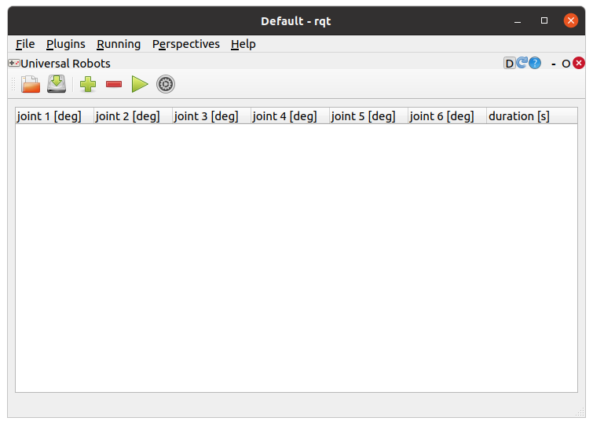
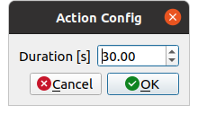

UR(experimental)
ここでは、UR(experimental)の使い方を説明します。UR(experimental)は、ユニバーサルロボット社のUR5e に対して各関節の角度を指示するためのrqtの拡張機能です。

UR(experimental)の起動
UR(experimental)を起動する手順は次のとおりです。
メインメニュー「Plugins」-「Robot Tools」-「UR(experimental)」を選択する
各関節の角度の指示
各関節の角度を指示する手順は次のとおりです。
ツールバーの＋ボタンを押してリストに行を追加する、または−ボタンを押してリストから行を削除する
追加した行のjoint 1 [deg]〜joint 6 [deg]とduration [s]に任意の数値を入力する
ツールバーの▶ボタンを押して各関節の角度を指示する
各パラメータは、次のとおりです。
パラメータ |
デフォルト値 |
単位 |
意味 |
|---|---|---|---|
joint 1~6 |
- |
deg |
各関節の角度を指定します。joint 1~6は、順にshoulder_pan_joint、shoulder_lift_joint、elbow_joint、wrist_1_joint、wrist_2_joint、wrist_3_jointに対応しています |
duration |
- |
s |
現在の姿勢から次の姿勢までの状態遷移の時間を指定します |
▶ボタンを押すと、リストの上から順にUR5eに対して各関節の角度が指示されます。
リストの保存
リストを保存する手順は以下のとおりです。なお、リストの設定はJSON（.json）形式で保存されます。
ツールバーのハードディスクボタンを押して保存する
リストの読み込み
リストを読み込む手順は以下のとおりです。
ツールバーのディレクトリボタンを押して、読み込みたいファイル（.json）を読み込む
UR(experimental)の設定
UR(experimental)では、以下の設定をすることができます。

パラメータ |
デフォルト値 |
単位 |
意味 |
|---|---|---|---|
duration |
30 |
s |
各関節の角度を指示したときのサーバの待ち時間を指定します |